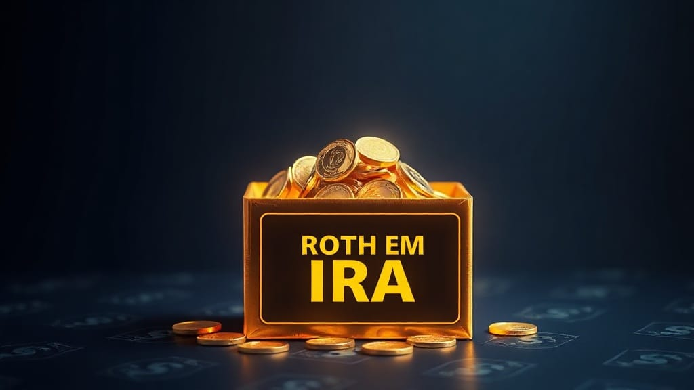

What Is a Roth Conversion and When to Do It
A Roth conversion can save tens of thousands in taxes — or cost the same if done wrong. The best 4 scenarios where it makes sense in 2026.
Z Zar · 28 May 2026 — 10 min read

Disclosure: ZarWealth uses Amazon and other affiliate links throughout this article. We receive a small commission on qualifying purchases, at no additional cost to you. This helps keep ZarWealth free of paywalls and intrusive ads. Always do your own research before making any tax-related decision — consult a CPA or fiduciary advisor for your specific situation.
Before you convert, it helps to know which account type wins for your situation in the first place. Our guide on Roth vs Traditional IRA has a free calculator that shows the answer for your tax bracket.
Want to go deeper on this? See What Is a Brokerage Account vs an IRA.
Want to go deeper on this? See What Is a 401k and How Does It Work in 2026?.
📈 Investing Part of our Complete Investing Guide — when (and when not) to move pre-tax retirement money into a Roth account.
A Roth conversion is one of the most powerful — and most misunderstood — moves in retirement planning. Done at the right time, it can save you tens of thousands of dollars in lifetime taxes. Done at the wrong time, it can cost you that much in unnecessary tax bills today.
This guide walks through exactly what a Roth conversion is, the four scenarios where it makes mathematical sense in 2026, and the common traps that turn a "smart" conversion into an expensive mistake.
What Is a Roth Conversion?
A Roth conversion is the process of moving money from a pre-tax retirement account (Traditional IRA, 401(k), 403(b), SEP IRA) into a Roth IRA. You pay ordinary income tax on the amount you convert in the year you convert it. In exchange, that money grows tax-free for the rest of your life and is never taxed again on withdrawal.
The simplest mental model: you're choosing to pay your tax bill now instead of in retirement. Whether that's a good deal depends on one variable — your tax rate today versus your expected tax rate when you'd otherwise withdraw the money.
If you're newer to these accounts, our breakdown of what a Roth IRA is and why every millennial needs one covers the foundational mechanics before you decide whether to convert anything.
How a Roth Conversion Actually Works in 2026
The mechanics are straightforward, but the timing matters more than the steps.
Step 1. You request your brokerage to move a specific dollar amount from your Traditional IRA (or rollover IRA) to your Roth IRA. This is the "conversion."
Step 2. The amount converted is added to your taxable income for that calendar year. If you convert $30,000 and your other income puts you in the 22% federal bracket, you'll owe roughly $6,600 extra in federal tax (plus state, if applicable).
Step 3. You pay the conversion tax from a separate source — ideally cash from a taxable brokerage or savings account, never from the IRA itself. Paying the tax from the IRA defeats most of the math (more on this below).
Step 4. The converted dollars now live in your Roth IRA and grow tax-free forever. You can withdraw the principal anytime after 5 years from conversion with no tax and no penalty. Earnings are tax-free at 59½.
Critical detail in 2026: there is no income limit for Roth conversions. Unlike direct Roth IRA contributions (which phase out at ~$165k single / ~$246k married), anyone can convert any amount, any year. This is what makes the "backdoor Roth" strategy work for high earners.
🟡 Free Download
The 10-Step Financial Independence Checklist
The exact framework we use to decide whether a Roth conversion fits your plan — covering tax-bracket optimization, emergency-fund buffers, and withdrawal sequencing.
Get the Checklist Free →When a Roth Conversion Makes Mathematical Sense
There are exactly four scenarios where a Roth conversion is almost always the right move. Anything outside these is a coin flip at best.
Scenario 1: A Low-Income Year (Gap Year, Sabbatical, Job Loss)
If your income drops temporarily — between jobs, on sabbatical, in early retirement before Social Security kicks in — your marginal tax bracket also drops. Converting during these years lets you pay 12% or 22% on money that would otherwise be taxed at 24-35% in your peak earning years (or in retirement, when RMDs push you back into higher brackets).
Example: An engineer earning $180k loses their job in March and stays unemployed for 8 months. Their AGI for the year is $45k. They convert $40k of Traditional IRA money, staying entirely within the 12% bracket. Tax cost: $4,800. The same conversion two years later would have cost $9,600+ in the 24% bracket.
Scenario 2: Early Retirement Before Age 65
The "Roth conversion ladder" is a cornerstone of the FIRE movement. Once you retire early, your taxable income drops to near zero. You can convert $30-50k per year from Traditional to Roth at minimal tax cost (potentially 0% federal if you stay under the standard deduction + 0% capital gains bracket).
Five years after each conversion, you can withdraw that converted principal penalty-free, even before 59½. This is how early retirees bridge the gap between leaving the workforce and accessing traditional retirement accounts. Our walkthrough on how to retire 10 years early covers the full ladder mechanics.
Scenario 3: Expecting Higher Future Tax Rates
Current federal tax rates (the 2017 Tax Cuts and Jobs Act brackets) are scheduled to sunset at the end of 2025 and revert to higher pre-2018 levels in 2026 and beyond. The 22% bracket becomes 25%; the 24% becomes 28%; the 32% becomes 33%. If Congress doesn't extend the cuts, anyone in the 22-32% bracket today is staring at a 3-point tax hike on every Traditional IRA dollar withdrawn after 2025.
For many savers, converting before rates rise is the most tax-efficient move available — even though it means paying tax now instead of in retirement. The window is narrow.
Scenario 4: Leaving a Tax-Efficient Estate to Heirs
Under the SECURE Act, non-spouse heirs (kids, nieces, nephews) must drain inherited Traditional IRAs within 10 years. If you leave a $500k Traditional IRA to a child in their peak earning years, those forced withdrawals will hit their marginal bracket — often 32-37%. Converting to Roth during your lifetime, especially in low-income retirement years, dramatically reduces the tax burden on your heirs. Inherited Roth IRAs still have the 10-year drain, but distributions are tax-free.
When a Roth Conversion Is a Bad Idea
Just as important: the four situations where converting destroys wealth instead of building it.
1. You'd pay the conversion tax from the IRA itself. If you convert $30k and pull $6.6k out of the IRA to pay the tax, that $6.6k is also taxed and hit with the 10% early-withdrawal penalty if you're under 59½. The math falls apart entirely. Only convert if you have cash on the side to cover the tax.
2. You're in your peak earning years with no exit plan. A 38-year-old in the 32% bracket converting $50k pays $16k in tax today. In retirement, that same withdrawal might be taxed at 22% — a $5k loss on a single decision.
3. You'll likely need the converted money within 5 years. Converted principal has a 5-year clock before it can be withdrawn penalty-free. If you might need the money sooner, leave it in a taxable account.
4. Conversion would push you into a much higher bracket. If you're at the top of the 22% bracket and converting $50k would push the last $30k into 32%, you're paying premium prices on incremental dollars. Convert only up to the top of your current bracket.
How to Execute a Roth Conversion Step-by-Step
Step 1. Open a Roth IRA if you don't already have one (any major brokerage: Fidelity, Schwab, Vanguard, all free).
Step 2. Calculate your conversion ceiling. Take your projected taxable income for the year, subtract from the top of your current bracket, and convert up to but not over that gap. (Federal 2026 brackets: 12% ends at ~$48k single / $96k married; 22% at ~$103k single / $206k married; 24% at ~$197k single / $394k married.)
Step 3. Request the conversion from your brokerage (Fidelity, Schwab, Vanguard all have one-page conversion forms or self-service flows online). The transfer typically completes in 1-3 business days.
Step 4. Pay estimated taxes. Conversions are taxable events but no tax is withheld by default. To avoid an underpayment penalty, send an estimated-tax payment to the IRS (Form 1040-ES) within the quarter you convert, or increase your W-2 withholding to cover it.
Step 5. File Form 8606 with your tax return for the year. Your brokerage sends a 1099-R; your CPA (or TurboTax) handles the rest. Keep records — the 5-year clock starts January 1 of the conversion year.
Roth Conversion vs. Backdoor Roth: What's the Difference?
A Roth conversion moves existing pre-tax retirement money (Traditional IRA, rollover IRA, old 401(k)) into a Roth IRA. The tax cost is real.
A backdoor Roth is a specific 2-step strategy for high earners blocked from contributing directly to a Roth: (1) contribute non-deductible funds to a Traditional IRA, (2) immediately convert to Roth. Because the contributed dollars are after-tax, the conversion tax is near zero. This only works cleanly if you have no other pre-tax IRA balances (otherwise the pro-rata rule applies and partially taxes the conversion).
The two strategies often get conflated, but they solve different problems. Conversions are for moving existing assets; backdoor Roths are for getting new annual contributions into a Roth despite the income limit.
Roth Conversion FAQ (2026)
What is the best age to do a Roth conversion?
The mathematically optimal window for most savers is age 60-72 — after peak earning years but before Required Minimum Distributions (RMDs) start at 73. During this gap, taxable income often drops and conversions can be done at the 12-22% bracket instead of the 24-32% peak rates. For early retirees, ages 45-65 work similarly.
Is there an income limit for Roth conversions in 2026?
No. The income limit applies only to direct Roth IRA contributions (which phase out at $165k single / $246k married in 2026). Roth conversions have no income cap — anyone, at any income level, can convert any amount of Traditional IRA money to a Roth IRA in any year.
How much tax will I pay on a Roth conversion?
The converted amount is added to your taxable income for that year. If you convert $40,000 and you're in the 22% federal bracket, you'll owe approximately $8,800 in federal tax (plus state, if applicable). Always model the conversion in tax software first to confirm it doesn't push you into a higher bracket or affect ACA subsidies, IRMAA Medicare surcharges, or Social Security taxation.
Can I undo a Roth conversion?
No. Roth conversion recharacterizations were eliminated by the Tax Cuts and Jobs Act of 2017. Once you convert, it's permanent. This is why modeling the tax impact before converting is essential — there is no take-back if the market drops or your income changes.
Should I convert all my Traditional IRA at once?
Almost never. A large single-year conversion typically pushes you into much higher brackets, triggering 24-32% rates on the last dollars converted. Most planners recommend a multi-year "ladder" — converting just enough each year to fill up your current bracket without spilling into the next one. Spreading a $200k conversion over 5-7 years is usually more tax-efficient than doing it all at once.
Does a Roth conversion affect Social Security or Medicare premiums?
Yes, it can. Conversion income raises your MAGI, which can increase the taxable portion of your Social Security (up to 85%) and trigger IRMAA Medicare premium surcharges if you cross the thresholds (~$103k single / $206k married in 2026). For retirees on Medicare, even a modest conversion can add $1-3k in surcharges. Always check IRMAA brackets before converting.
What is the 5-year rule for Roth conversions?
Each individual conversion has its own 5-year clock starting January 1 of the conversion year. You can withdraw converted principal tax-free and penalty-free after 5 years, even if you're under 59½. This is what makes the Roth conversion ladder work for early retirees. Earnings on converted money follow the standard Roth rules (tax-free at 59½ and after the account is at least 5 years old).
The Bottom Line
A Roth conversion is a powerful lever, but only when the math is on your side. The right years to convert are the ones where your tax rate is temporarily low — gap years, early retirement, or before scheduled tax-rate increases. The wrong years are peak earning years or any year where you'd pay the tax from the IRA itself.
If you're under 50 and still in your high-earning decades, a Roth conversion probably isn't your first move — maxing out tax-deferred accounts likely beats it. If you're 55+ and starting to think about retirement timing, RMDs, and inheritance, a multi-year Roth conversion strategy is one of the highest-leverage tax moves available. The difference between a smart conversion plan and no plan can run into six figures over a lifetime.
For the broader retirement planning context, see our guide on the FIRE movement and early retirement and our breakdown of how to max out your 401(k) in 2026.
Want the full picture?
Roth conversions are one piece of a larger retirement strategy. See our complete Investing Guide for the full sequence of tax-advantaged moves, account types, and withdrawal strategies.
📥 Free download: The 10-Step Financial Independence Checklist
The same framework we use to evaluate Roth conversion windows — covering tax-bracket optimization, emergency-fund buffers, and withdrawal sequencing. Get the checklist free →
Disclosure: ZarWealth uses Amazon and other affiliate links throughout this article. We are not tax advisors. Roth conversion decisions involve complex personal tax situations — always consult a CPA or fiduciary financial advisor before executing.